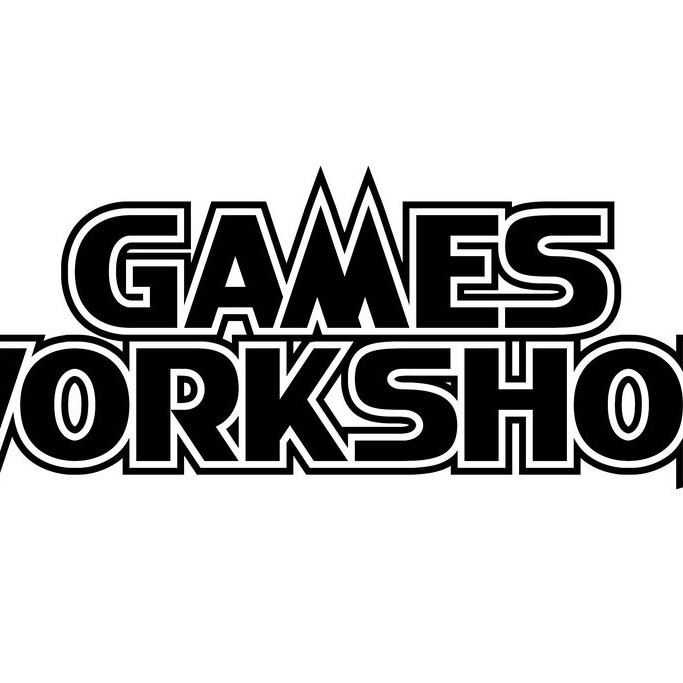

de creatie
"Forget the promise of progress and understanding, for in the grim dark future there is only war. There is no peace amongst the stars, only an eternity of carnage and slaughter, and the laughter of thirsting gods."
Dit is de openingslijn van de Warhammer 40k universum, een donkere plek waar zelden iemand een goed einde heeft maar hoe zijn we nu bij dit gekomen. Het spel is gemaakt in 1987 door een groepje nerds dat niet wisten dat ze uiteindelijk een keizerrijk zouden opstichten gebaseerd op een vorig bordspel “Warhammer Fantasy Battle” was de eerste uitgave “Warhammer 40k Rogue Trader”.
De verhalen spelen zich af in het jaar 40.000 dus 38.000 in onze toekomst. In deze toekomst is de mensheid ver geraakt maar nog verder gevallen, ze worden van alle kanten aangevallen door aliens, demonen en zelf een wandelende groene fungus.
Maar dit betekent niet dat de mensheid of “The Imperium Of Mankind” de helden in dit verhaal zijn, nee verre van. De serie is bekend om de term “GRIMDARK” te verspreiden, wat houdt dit nu in? Een verhaal dat een vorm van horror met zich meesleept, geen horror waar je achtervolgt wordt door een seriemoordenaar maar de horror dat je voelt wanneer er geen hoop meer is, dat alles dat je hebt gemaakt in u leven voor u ontnomen is geweest. En deze term is perfect om Warhammer 40k te beschrijven.
Het bedrijf dat ze opgesticht hebben zal uiteindelijk "Games Workshop" genoed worden de locatie vindt u hieronder.
Comments